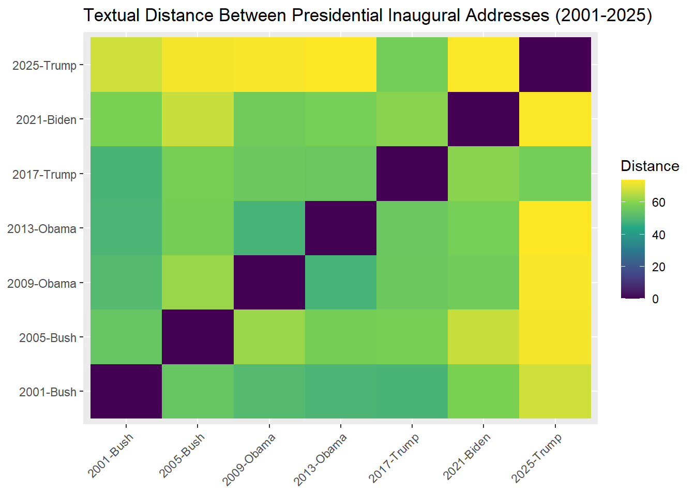
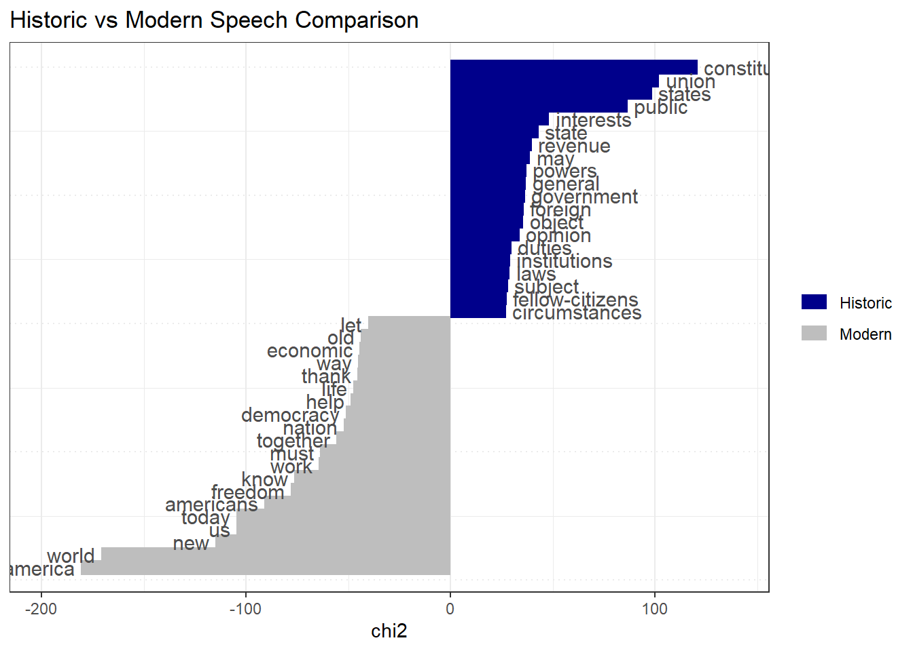
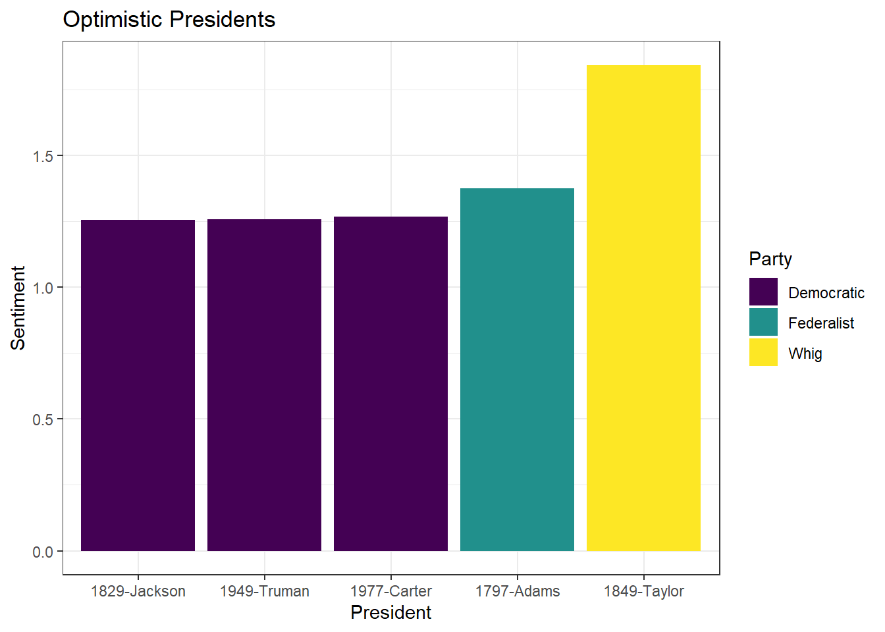

print("Code Chunk")[1] "Code Chunk"The workshop is intentionally applied. This means that on your laptop, you should download and launch the script. Then:
Follow the instructor by executing the code and modifying it as needed.
Complete the exercises.
Ask questions.
If you feel like the workshop is moving too slowly, go ahead and start the exercises!
The script is extensively commented, so you can return to any part of it later.
In case you do not have RStudio installed, see the instruction here.
Similarity between Texts
Relative Frequency Analysis
Sentiment Analysis
Machine Learning: Classifiers
First, we start with a quick recap of RStudio.
To insert a Code Chunk, you can use Ctrl+Alt+I on Windows and Cmd+Option+I on Mac. Run the whole chunk by clicking the green triangle, or one/multiple lines by using Ctrl + Enter or Command + Return on Mac.
print("Code Chunk")[1] "Code Chunk"Most of the functions we want to run require an argument For example, the function print() above takes the argument “Code Chunk”.
function(argument)For example, consider an object. Try printing it by highlighting the required line and pressing Ctrl+Enter or Cmd+Return on Mac.
number = 1
number
print(number)
word = "Northwestern"
word[1] 1
[1] 1
[1] "Northwestern"Quite frequently, we use additional libraries to extend the capabilities of R. In this workshop we highly relying on several quanteda libraries and tidyverse. Please, if you do not have these libraries, install them now.
Check if you have them installed
c("tidyverse", "quanteda", "quanteda.textstats") %in% rownames(installed.packages())If you do not, please install them using the chunk below. Run it only once!. Instead of ... insert the package that is missing.
install.packages("...")Now, load them into the current R session.
Quanteda is a widely used R package for quantitative text analysis (QTA), developed by fellow political scientists. It stands for quantitative analysis of textual data.
library(tidyverse)
library(quanteda)Warning: package 'quanteda' was built under R version 4.5.2library(quanteda.textstats)Warning: package 'quanteda.textstats' was built under R version 4.5.2The collections of documents is called corpus. For example, imagine you have two documents.
simple_corpus = corpus(c("A corpus is a set of documents.",
"This is the second document in the corpus"))
simple_corpusCorpus consisting of 2 documents.
text1 :
"A corpus is a set of documents."
text2 :
"This is the second document in the corpus"Additionally, you can add document-level variables. For example, an authorship, number of characters, regions, etc etc. Let’s calculate number of characters in each document. What does $ operator do?
docvars(simple_corpus)$charcount = nchar(simple_corpus)Let’s see the result
docvars(simple_corpus) charcount
1 31
2 41In other words, quanteda stores information about the text separately from the text itself. Important for the future manipulations!
Each document consists of tokens. When we tokenize a corpus, the text is segmented into tokens (words or sentences) based on word boundaries. In other words, each word in the document is separated into its own token.
simple_toks = tokens(simple_corpus,
remove_punct = TRUE)
simple_toksTokens consisting of 2 documents and 1 docvar.
text1 :
[1] "A" "corpus" "is" "a" "set" "of"
[7] "documents"
text2 :
[1] "This" "is" "the" "second" "document" "in" "the"
[8] "corpus" Document-feature matrix (DFM) Represents frequencies of features in documents in a matrix, for example, tokens. Let’s constructs a document-feature matrix (DFM) from a tokens object. Run the chunk, take a look on the result. What did DFM do to our data?
simple_dfm = dfm(simple_toks)
simple_dfmDocument-feature matrix of: 2 documents, 11 features (40.91% sparse) and 1 docvar.
features
docs a corpus is set of documents this the second document
text1 2 1 1 1 1 1 0 0 0 0
text2 0 1 1 0 0 0 1 2 1 1
[ reached max_nfeat ... 1 more feature ]We completely destroy the order of words in our corpus. This is a quick visualization.

This allows us to, say, calculate the most frequent words in the whole corpus.
topfeatures(simple_dfm, n = 10) a corpus is the set of documents this
2 2 2 2 1 1 1 1
second document
1 1 
Quanteda has some datasets embedded directly into the package. Let’s explore one of these - the presidential inaugural address texts.
data_corpus_inaugural Corpus consisting of 60 documents and 4 docvars.
1789-Washington :
"Fellow-Citizens of the Senate and of the House of Representa..."
1793-Washington :
"Fellow citizens, I am again called upon by the voice of my c..."
1797-Adams :
"When it was first perceived, in early times, that no middle ..."
1801-Jefferson :
"Friends and Fellow Citizens: Called upon to undertake the du..."
1805-Jefferson :
"Proceeding, fellow citizens, to that qualification which the..."
1809-Madison :
"Unwilling to depart from examples of the most revered author..."
[ reached max_ndoc ... 54 more documents ]For details about the corpus, you can use the summary() function. Types are unique tokens, and tokens are usually words. In this way, we can get a sense of how diverse the president’s vocabulary is.
summary(data_corpus_inaugural)If you want to get some specific information about the corpus, you can use the following commands.
ntoken(), number of tokens in each document
ndoc(), number of documents in corpus
docvars(), access document-level variables
Let’s try these together
...Imagine you are interested in measuring the similarity between addresses starting in 2000. To do this, you will need to:
Subset corpus
Preprocess text
Create a document-feature matrix
Calculate similarity/distance measures
First, subset the corpus based on the document-level variable Year
data_inaug_2000 = data_corpus_inaugural %>%
corpus_subset(Year >= 2000)Then, check how many speeches are left.
ndoc(data_inaug_2000)[1] 7Now, let’s process the text. This step is crucial for text analysis. If you do not preprocess the text, punctuation (commas, periods), symbols, or numbers can influence the calculation of various measures.
toks_inaug_2000 = data_inaug_2000 %>%
tokens(remove_punct = TRUE,
remove_symbols = TRUE,
remove_numbers = TRUE)
toks_inaug_2000[1]Tokens consisting of 1 document and 4 docvars.
2001-Bush :
[1] "President" "Clinton" "distinguished" "guests"
[5] "and" "my" "fellow" "citizens"
[9] "the" "peaceful" "transfer" "of"
[ ... and 1,571 more ]Additionally, some words may appear very frequently, such as articles (a, the) and conjunctions (and, if). These are called stopwords. It is good practice to remove them, as they convey little information about the similarity between texts but can significantly affect the results.
toks_inaug_2000 = toks_inaug_2000 %>%
tokens_remove(stopwords("en"))
toks_inaug_2000[1]Tokens consisting of 1 document and 4 docvars.
2001-Bush :
[1] "President" "Clinton" "distinguished" "guests"
[5] "fellow" "citizens" "peaceful" "transfer"
[9] "authority" "rare" "history" "yet"
[ ... and 771 more ]Lastly, we stem the tokens. Stemming means truncating words so different version of the words becomes unified. Use tokens_wordstem() for stemming. Let’s try together.
tokens("citizen citizens run running") %>%
...So, stem our tokens.
toks_inaug_2000 = toks_inaug_2000 %>%
tokens_wordstem()
toks_inaug_2000[1]Tokens consisting of 1 document and 4 docvars.
2001-Bush :
[1] "Presid" "Clinton" "distinguish" "guest" "fellow"
[6] "citizen" "peac" "transfer" "author" "rare"
[11] "histori" "yet"
[ ... and 771 more ]Good news! Last step. Finally, we can create Document-feature matrix out of processed text.
dfm_inaug_2000 = toks_inaug_2000 %>%
dfm()
dfm_inaug_2000Document-feature matrix of: 7 documents, 1,955 features (70.33% sparse) and 4 docvars.
features
docs presid clinton distinguish guest fellow citizen peac transfer
2001-Bush 3 2 1 1 1 10 2 1
2005-Bush 4 1 1 1 3 7 2 0
2009-Obama 1 0 0 0 1 1 4 0
2013-Obama 2 0 1 1 3 8 5 0
2017-Trump 5 1 0 0 1 4 1 3
2021-Biden 7 0 1 1 5 1 5 1
features
docs author rare
2001-Bush 2 1
2005-Bush 1 0
2009-Obama 0 0
2013-Obama 1 0
2017-Trump 0 0
2021-Biden 0 1
[ reached max_ndoc ... 1 more document, reached max_nfeat ... 1,945 more features ]Side note, a fascinating feature of quanteda is that, even after many manipulations on the corpus, the document-level variables are accessible.
docvars(dfm_inaug_2000) Year President FirstName Party
1 2001 Bush George W. Republican
2 2005 Bush George W. Republican
3 2009 Obama Barack Democratic
4 2013 Obama Barack Democratic
5 2017 Trump Donald J. Republican
6 2021 Biden Joseph R. Democratic
7 2025 Trump Donald J. RepublicanNow, let’s calculate the distance between texts. By default, this is measured using Euclidean distance. Interpreting it is quite straightforward: the larger the value, the less similar the texts are.
address_distance = textstat_dist(dfm_inaug_2000)
address_distancetextstat_dist object; method = "euclidean"
2001-Bush 2005-Bush 2009-Obama 2013-Obama 2017-Trump 2021-Biden
2001-Bush 0 54.4 50.7 49.1 48.8 59.0
2005-Bush 54.4 0 62.3 57.7 58.0 67.1
2009-Obama 50.7 62.3 0 48.5 55.6 56.7
2013-Obama 49.1 57.7 48.5 0 55.2 57.8
2017-Trump 48.8 58.0 55.6 55.2 0 60.4
2021-Biden 59.0 67.1 56.7 57.8 60.4 0
2025-Trump 68.0 72.4 72.9 73.7 57.4 73.3
2025-Trump
2001-Bush 68.0
2005-Bush 72.4
2009-Obama 72.9
2013-Obama 73.7
2017-Trump 57.4
2021-Biden 73.3
2025-Trump 0To simplify the task of interpretation, we can visualize the results. The code below demonstrates the power of tidyverse - which is helpful, but out of the scope of this workshop. If you’re interested more in this, take a look on the tutorial.
df_distance = address_distance %>%
as.matrix() %>%
as.data.frame() %>%
rownames_to_column("doc1") %>%
pivot_longer(cols = -doc1, names_to = "doc2", values_to = "distance")
ggplot(df_distance, aes(doc1, doc2, fill = distance)) +
geom_tile() +
labs(title = "Textual Distance Between Presidential Inaugural Addresses (2001-2025)",
x = NULL,
y = NULL,
fill = "Distance") +
scale_fill_viridis_c() +
theme(axis.text.x = element_text(angle = 45, hjust = 1))
What are the most “distant” speeches?
df_distance %>%
group_by(doc1) %>%
slice_max(distance, n = 1)# A tibble: 7 × 3
# Groups: doc1 [7]
doc1 doc2 distance
<chr> <chr> <dbl>
1 2001-Bush 2025-Trump 68.0
2 2005-Bush 2025-Trump 72.4
3 2009-Obama 2025-Trump 72.9
4 2013-Obama 2025-Trump 73.7
5 2017-Trump 2021-Biden 60.4
6 2021-Biden 2025-Trump 73.3
7 2025-Trump 2013-Obama 73.7Imagine you want to understand how language has evolved over the centuries. Which words are definitive of historical rhetoric, and which are of modern rhetoric?
To investigate this, let’s define historic language as everything before 1901, and modern language as everything from 1901 onward. We can then create a document-level variable in our corpus.
docvars(data_corpus_inaugural) = docvars(data_corpus_inaugural) %>%
mutate(Language = ifelse(Year < 1901, "Historic", "Modern"))
docvars(data_corpus_inaugural) %>%
tail() Year President FirstName Party Language
55 2005 Bush George W. Republican Modern
56 2009 Obama Barack Democratic Modern
57 2013 Obama Barack Democratic Modern
58 2017 Trump Donald J. Republican Modern
59 2021 Biden Joseph R. Democratic Modern
60 2025 Trump Donald J. Republican ModernProcess text to create a document-feature matrix. Let’s tokenize it and remove the stopwords.
dfm_historic = data_corpus_inaugural %>%
tokens(remove_punct = TRUE,
remove_symbols = TRUE,
remove_numbers = TRUE) %>%
tokens_remove(stopwords("en")) %>%
dfm()Currently, the corpus represents addresses by the presidents. However, if we want to compare historic and modern speeches, we need to change the unit of analysis. For this task, we can group by the type of Language - the variable we have created above. How many documents are there?
dfm_historic = dfm_historic %>%
dfm_group(Language)
dfm_historicDocument-feature matrix of: 2 documents, 9,359 features (31.61% sparse) and 1 docvar.
features
docs fellow-citizens senate house representatives among vicissitudes
Historic 36 12 5 16 59 5
Modern 3 3 6 3 49 0
features
docs incident life event filled
Historic 7 30 13 4
Modern 1 111 3 2
[ reached max_nfeat ... 9,349 more features ]To understand the difference between Modern and Historic languages, we use Relative frequency analysis textstat_keyness(). Then, let’s visualize it. Did our stopwords list worked as expected?
key_historic = dfm_historic %>%
textstat_keyness(target = "Historic")
key_historic %>%
head() feature chi2 p n_target n_reference
1 constitution 120.77355 0.000000e+00 185 25
2 union 102.12659 0.000000e+00 165 25
3 states 98.54139 0.000000e+00 264 79
4 public 86.54480 0.000000e+00 184 43
5 interests 48.28855 3.678946e-12 95 20
6 state 43.16201 5.038980e-11 91 21It would be easier to understand what’s going on if we visualize. Load quanteda.textplots library, install it with install.packages() if needed.
install.packages("...")Finally, visualize
library(quanteda.textplots)Warning: package 'quanteda.textplots' was built under R version 4.5.2textplot_keyness(key_historic) +
labs(title = "Historic vs Modern Speech Comparison")
Now, imagine you want to find out who is the most optimistic president. To do this, we can apply sentiment analysis. Explore the dictionary embedded in quanteda below.
data_dictionary_LSD2015Dictionary object with 4 key entries.
- [negative]:
- a lie, abandon*, abas*, abattoir*, abdicat*, aberra*, abhor*, abject*, abnormal*, abolish*, abominab*, abominat*, abrasiv*, absent*, abstrus*, absurd*, abus*, accident*, accost*, accursed* [ ... and 2,838 more ]
- [positive]:
- ability*, abound*, absolv*, absorbent*, absorption*, abundanc*, abundant*, acced*, accentuat*, accept*, accessib*, acclaim*, acclamation*, accolad*, accommodat*, accomplish*, accord, accordan*, accorded*, accords [ ... and 1,689 more ]
- [neg_positive]:
- best not, better not, no damag*, no no, not ability*, not able, not abound*, not absolv*, not absorbent*, not absorption*, not abundanc*, not abundant*, not acced*, not accentuat*, not accept*, not accessib*, not acclaim*, not acclamation*, not accolad*, not accommodat* [ ... and 1,701 more ]
- [neg_negative]:
- not a lie, not abandon*, not abas*, not abattoir*, not abdicat*, not aberra*, not abhor*, not abject*, not abnormal*, not abolish*, not abominab*, not abominat*, not abrasiv*, not absent*, not abstrus*, not absurd*, not abus*, not accident*, not accost*, not accursed* [ ... and 2,840 more ]We tokenize the corpus, and apply the sentiment dictionary. It simply calculates how many words are negative or positive in speech of each president. Quite a frequency analysis!
dfm_sentiment = data_corpus_inaugural %>%
tokens() %>%
tokens_lookup(data_dictionary_LSD2015) %>%
dfm()
dfm_sentimentDocument-feature matrix of: 60 documents, 4 features (19.17% sparse) and 5 docvars.
features
docs negative positive neg_positive neg_negative
1789-Washington 43 122 0 0
1793-Washington 3 10 0 0
1797-Adams 61 239 0 4
1801-Jefferson 70 177 2 0
1805-Jefferson 95 164 3 1
1809-Madison 62 138 0 4
[ reached max_ndoc ... 54 more documents ]However, let’s use formula by (Proksch et al., 2019)1 to calculate the sentiment. But first, let’s export our document-feature matrix to data frame.
\[ \log\frac{\text{pos} + 0.5}{\text{neg} + 0.5} \]
president_sentiment = dfm_sentiment %>%
convert(to = "data.frame") %>%
mutate(sentiment = log((positive + neg_negative + 0.5) / (negative + neg_positive + 0.5))) %>%
cbind(docvars(dfm_sentiment))
president_sentiment %>%
head() doc_id negative positive neg_positive neg_negative sentiment Year
1 1789-Washington 43 122 0 0 1.0353501 1789
2 1793-Washington 3 10 0 0 1.0986123 1793
3 1797-Adams 61 239 0 4 1.3760798 1797
4 1801-Jefferson 70 177 2 0 0.8953840 1801
5 1805-Jefferson 95 164 3 1 0.5189146 1805
6 1809-Madison 62 138 0 4 0.8241754 1809
President FirstName Party Language
1 Washington George none Historic
2 Washington George none Historic
3 Adams John Federalist Historic
4 Jefferson Thomas Democratic-Republican Historic
5 Jefferson Thomas Democratic-Republican Historic
6 Madison James Democratic-Republican HistoricVisualize top-5 most positive presidents.
president_sentiment %>%
slice_max(sentiment, n = 5) %>%
ggplot(aes(x = reorder(doc_id, sentiment), y = sentiment, fill = Party)) +
geom_col() +
scale_fill_ordinal() +
theme_bw() +
labs(x = "President",
y = "Sentiment",
title = "Optimistic Presidents")
This is an extra portion, and a bit of entertaining example.
Suppose you want to determine whether a person belongs to the Republican or Democratic party, but you do not know which one. You have data on previous partisan rhetoric, and you can use it to estimate how likely it is that the person belongs to each party.
Let’s try this out. For this, we would need quanteda.textmodels library. Install it if you do not have it, and load it!
library(quanteda.textmodels)Use the inaugural address speeches. But leave only two parties: Republican and Democrats.
party_inaugural = data_corpus_inaugural %>%
corpus_subset(Party %in% c("Republican", "Democratic"))Now, as with most machine learning techniques, split the dataset into two parts: a training set, which is used to train the model, and a test set, which is used to evaluate how well the model performs.
# create IDs to split the data
docvars(party_inaugural)$ID = 1:ndoc(party_inaugural)
# randomly select 30 IDs that would be in the training dataset
set.seed(123)
train_sample = sample(docvars(party_inaugural)$ID, 30, replace = FALSE)
# specify which document belongs to a training or testing dataset
docvars(party_inaugural) = docvars(party_inaugural) %>%
mutate(Train = ifelse(ID %in% train_sample, TRUE, FALSE))
docvars(party_inaugural)$Party = factor(docvars(party_inaugural)$Party, levels = c("Democratic", "Republican"))Now, process the data and create two document-feature matrices: for the training and test datasets.
dfm_party = party_inaugural %>%
tokens(remove_punct = TRUE,
remove_number = TRUE,
remove_symbols = TRUE) %>%
tokens_remove(stopwords("en")) %>%
dfm()
dfm_party_train = dfm_party %>%
dfm_subset(Train == TRUE)
dfm_party_test = dfm_party %>%
dfm_subset(Train == FALSE)Finally, build the model!
tmod_nb = textmodel_nb(dfm_party_train, dfm_party_train$Party)
summary(tmod_nb)
Call:
textmodel_nb.dfm(x = dfm_party_train, y = dfm_party_train$Party)
Class Priors:
(showing first 2 elements)
Democratic Republican
0.5 0.5
Estimated Feature Scores:
fellow citizens undertake arduous duties appointed perform
Democratic 0.0013570 0.001751 0.0001751 8.755e-05 0.0005253 4.377e-05 0.0001751
Republican 0.0009669 0.002329 0.0000879 8.790e-05 0.0005274 1.758e-04 0.0000879
choice free people avail customary solemn occasion
Democratic 8.755e-05 0.001882 0.006478 8.755e-05 4.377e-05 0.0006128 0.0003940
Republican 3.956e-04 0.002857 0.006197 8.790e-05 4.395e-05 0.0002198 0.0002198
express gratitude confidence inspires acknowledge accountability
Democratic 0.0001751 0.0001751 0.0010068 8.755e-05 8.755e-05 8.755e-05
Republican 0.0002198 0.0000879 0.0005274 1.319e-04 8.790e-05 8.790e-05
situation enjoins magnitude interests convinces thanks can
Democratic 8.755e-05 8.755e-05 4.377e-05 0.0011381 4.377e-05 4.377e-05 0.005428
Republican 2.198e-04 4.395e-05 1.319e-04 0.0009669 4.395e-05 1.319e-04 0.004659
adequate honor conferred
Democratic 8.755e-05 0.0004815 0.0002189
Republican 1.758e-04 0.0007032 0.0000879Now, let’s see how well it performs. Leave words that match between train and the test datasets.
dfmat_matched = dfm_match(dfm_party_test, features = featnames(dfm_party_train))Predict the Party and calculate the accuracy score.
actual_class = dfmat_matched$Party
predicted_class = predict(tmod_nb, newdata = dfmat_matched)
tab_class = table(actual_class, predicted_class)
tab_class predicted_class
actual_class Democratic Republican
Democratic 4 3
Republican 3 7(4+7) / (3+3+4+7) # accuracy score[1] 0.6470588Now, let’s apply this in a new context. Based on the debate over the Irish budget of 2010, which party do the politicians resemble more: Democrats or Republicans? Why do you think we got such results?
dfm_irishbudget = data_corpus_irishbudget2010 %>%
tokens(remove_punct = TRUE,
remove_number = TRUE,
remove_symbols = TRUE) %>%
tokens_remove(stopwords("en")) %>%
dfm()
dfmat_matched = dfm_match(dfm_irishbudget, features = featnames(dfm_party_train))
predicted_class = predict(tmod_nb, newdata = dfmat_matched)
predicted_class Lenihan, Brian (FF) Bruton, Richard (FG) Burton, Joan (LAB)
Republican Republican Republican
Morgan, Arthur (SF) Cowen, Brian (FF) Kenny, Enda (FG)
Republican Republican Republican
ODonnell, Kieran (FG) Gilmore, Eamon (LAB) Higgins, Michael (LAB)
Republican Republican Republican
Quinn, Ruairi (LAB) Gormley, John (Green) Ryan, Eamon (Green)
Republican Republican Republican
Cuffe, Ciaran (Green) OCaolain, Caoimhghin (SF)
Republican Republican
Levels: Democratic Republican| Function | Description |
|---|---|
corpus_subset() |
Subset a corpus |
corpus_reshape() |
Change corpus to another format (sentences, paragraphs, documents) |
docvars() |
Access document-level variables |
tokens() |
Create a tokens object |
tokens_lookup() |
Apply dictionary to tokens |
dfm() |
Create a document-feature matrix object |
dfm_group() |
Group documents by certain variable |
textstat_dist() |
Calculate distance between texts |
textstat_simil() |
Calculate similarity between texts |
textstat_keyness() |
Calculate relative frequency |
textmodel_nb() |
Naive Bayes classifier |
Accessible quanteda tutorials tutorials.quanteda.io
Application of LLMs* huggingface.co
*- be ready to switch to Python for this
Proksch, S.O., Lowe, W., Wäckerle, J. and Soroka, S., 2019. Multilingual sentiment analysis: A new approach to measuring conflict in legislative speeches. Legislative Studies Quarterly, 44(1), pp.97-131.↩︎